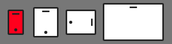

THIS IS A WORK IN PROGRESS. NOT READY FOR PUBLIC EXPOSURE.
What a time to be alive.
I'm all in with styled components and couldn't be happier. This is my current flow, thought I'd share it with you.
How we got here
Until now the approach was a combination of utility css files (imagine divs with flexbox classes as 'col-center justify-content-center align-items-center') and react media to render chunks of markup at diferent breakpoints.
It was the first step towards minimizing lenght of CSS and the hassle of naming classes (at work we are trilingual).
import React, { Component, PropTypes } from "react";
import Media from 'react-media';
import Footer from './widgets/footer';
import FooterMobile from './widgets/footer-mobile';
class App extends Component {
render() {
return (
<Media query="(min-width: 992px)">
{matches =>
matches
? <div>
<Footer />
</div>
: <div>
<FooterMobile />
</div>
}
</Media>
)
}
}
The trend was there, try to make self contained widgets with inmutable CSS classes and one Javascript object with styles to avoid polluting a CSS file with one-use clutter (be it #id or .class).
We had a txt.js file under widgets folder with some of these:
export const Bold = ({ children }) => {
const styles = {
fontWeight: 700
};
return (
<span style={styles}>
{children}
</span>
);
};
export const Touchable = ({ children }) => {
const styles = {
cursor: "pointer"
};
return (
<span style={styles}>
{children}
</span>
);
};
export const FontMegrim = ({ children, uppercase, typeScale }) => {
const styles = {
fontFamily: "Megrim, cursive",
textTransform: uppercase ? "uppercase" : "none"
};
return (
<span style={styles} className={typeScale}>
{children}
</span>
);
};
// use anywhere
// import { FontMegrim, Bold,Touchable } from "../widgets/txt";
// <p> <FontMegrim uppercase>Hello, <Bold>bold</Bold></p> </FontMegrim>
Notice how most don't reference a .txt-bold class on a immutable/utilities CSS file, the goal was self containtment when possible.
The above line is a lie if you look at FontMegrim and how it requires a classname that assigns font-size.The idea is to set the default font-family and font-size on the global CSS file and use this component on titles/headers.
Thing is, we can do better and have it all right here right now.
import styled, { css,keyframes } from 'styled-components';
export default () => (
<div>
<Paragraph tint="red" uppercase>
Hello World
</Paragraph>
<Paragraph>
<Word tint="#999"> Hello </Word> <Bold>World</Bold>
</Paragraph>
</div>
)
const Paragraph = styled.p`
color: ${props => props.tint ? tint : '#444'};
text-transform: ${props => props.uppercase ? 'uppercase' : 'none'};
`;
const Bold = styled.span`
font-weight:bold;
`;
const Uppercase = styled.span`
text-transform:uppercase;
`;
const Word = styled.span`
color: ${props => props.tint ? tint : '#444'};
`;
Moar Lo-Fi styled components I may have used in the past:
const TextEllipsis = styled.p`
max-width: 100%;
overflow: hidden !important;
text-overflow: ellipsis !important;
white-space: nowrap !important;
word-wrap: normal !important;
`;
const VerticalText = styled.p`
writing-mode: vertical-lr;
`;
If we transition to a more ambitious endeavour athe nd accept the fact that backbone of any website are links and buttons, we can go for another small effort big #win.
Color variations on buttons and force links to appear like buttons is one of the oldest fights. Now we can win it swiftly.
export default () => (
<div>
<Touchable
onClick={e => console.log(e)}>
Normal Touchable
</Touchable>
<TouchableBranded
onClick={e => console.log(e)}>
Branded Touchable
</TouchableBranded>
<Link href="/">
Normal Link
</Link>
<LinkUnderline href="/">
Link with Underline
</LinkUnderline>
</div>
)
const fadeIn = keyframes`
0% {
opacity: 0;
}
100% {
opacity: 1;
}
`;
const Touchable = styled.button`
animation: 1s ${fadeIn} ease-out;
cursor:pointer;
touch-action: manipulation;
-webkit-appearance: button;
& > * {
pointer-events: none;
}
`;
const TouchableBranded = Touchable.extend`
background: pink;
color:#fff;
&:hover {
opacity:.8;
}
`;
const Link = Touchable.withComponent('a')
const LinkUnderline = Link.extend`
text-decoration:underline;
`;
You could have styled the Touchables above with props but to make things a bit more clear for my teammates unless they are obvious ('uppercase') I don't mind writing a bit more. I was one of those who could never tell if a color was 'primary' or 'danger'...
As you contemplate the Way let's consider a classic piece of UI and marvel ourselves with all the Css we can use in JS. Most of it works, no need to ditch your fav old tricks.
export default () => (
<div>
<PopUp>
<div>
<Placeholder/>
</div>
<div>
<Placeholder/>
</div>
<div>
<Placeholder/>
</div>
</PopUp>
</div>
)
const foo = '.4rem';
const PopUp = styled.div`
border-radius:${foo};
background: ${props => props.dark ? '#444' : '#f9f9f9'};
color: ${props => props.dark ? '#f9f9f9' : '#444'};
@media (min-aspect-ratio: 16/9) {
position:absolute;
top:50%;
left:50%;
transform:translate(-50%,-50%);
}
> div:not(:last-of-type) {
margin-bottom:1rem;
}
#crash & {
display: none;
}
${props =>
props.notification &&
css`
background-color: #777;
`};
`;
All the powers right here right now. Nice.
Those final lines are a real powerful combo paired with React and State mgmt.
Real World Example
We've built at work our own feedback tool, when a client fills a bug we ask for a few things, one of them is on which device the err ocurred (think breakpoint, OS/Software has it's own picker)
Let's make the devices with CSS because we had little time and didn't want to lose myself browsing thenounproject.com:
class CreateBug extends Component {
state = {
device: "phone",
};
renderDeviceSelector() {
if (!this.state.device) return;
return (
<Devices>
<Iphone
pressed={this.state.device == "phone"}
onClick={() => this.setState({ device: "phone" })}
/>
<Tablet
pressed={this.state.device == "tablet"}
onClick={() => this.setState({ device: "tablet" })}
/>
<Tablet
pressed={this.state.device == "tablet-landscape"}
onClick={() => this.setState({ device: "tablet-landscape" })}
landscape
/>
<Desktop
pressed={this.state.device == "desktop"}
onClick={() => this.setState({ device: "desktop" })}
/>
</Devices>
)
}
render() {
return (
<Editor>
{this.renderDeviceSelector()}
</Editor>
)
}
}
const Devices = styled.div`
padding: 1rem;
display: flex;
flex-direction: row;
justify-content: space-between;
align-items: center;
`;
const Mobile = styled.span`
&:before,
&:after {
position: absolute;
content: "";
}
&:before {
top: 4px;
width: 15px;
height: 3px;
left: 50%;
transform: translateX(-50%);
background: #222;
border-radius: 15px;
background-clip: padding-box;
}
&:after {
bottom: 4px;
width: 6px;
height: 6px;
left: 50%;
transform: translateX(-50%);
background: #222;
border-radius: 50%;
background-clip: padding-box;
}
`;
const Iphone = Mobile.extend`
position: relative;
border: 3px solid #222;
border-radius: 3px;
background-clip: padding-box;
background-color: #fff;
width: 32px;
height: 50px;
${props => props.pressed && css`background-color: red;`};
`;
const Tablet = Mobile.extend`
position: relative;
border: 3px solid #222;
border-radius: 3px;
background-clip: padding-box;
background-color: #fff;
width: 50px;
height: 60px;
${props => props.pressed && css`background-color: red;`};
${props => props.landscape && css`transform: rotate(90deg);`}
`;
const Desktop = styled.span`
position: relative;
border: 3px solid #222;
border-radius: 3px;
background-clip: padding-box;
background-color: #fff;
width: 120px;
height: 75px;
&:before,
&:after {
position: absolute;
content: "";
}
&:before {
top: 4px;
width: 15px;
height: 3px;
left: 50%;
transform: translateX(-50%);
background: #222;
border-radius: 15px;
background-clip: padding-box;
}
&:after {
display: none;
}
${props => props.pressed && css`background-color: red;`};
`;
You could say to atomize things more and make renderDeviceSelector a component with it's own file but the bigger the project we start to have few problems such as naming files, importing them, switching folders...mental debt for the future self.
What I'm trying to say is find your way and don't settle with your current flow just yet. Try styled-components now.
'The first requirement of The Economist is that it should be readily understandable. Clarity of writing usually follows clarity of thought.' The Economist style Guide rings true to my background as writer, writing is really hard.
At work we code wide/big interfaces so we need a plan/zen on how to approach such a process with fastness and worry-free. We do Javascript and React is our front end framework. Disclaimer: no CS degree, self taught.
Bonus for the mad.
const complexMixin = css`
color: ${props => props.whiteColor ? 'white': 'black'}
`;
const StyledComp = styled.div`
${props => props.complex ? complexMixin : 'color: blue;'}
`;